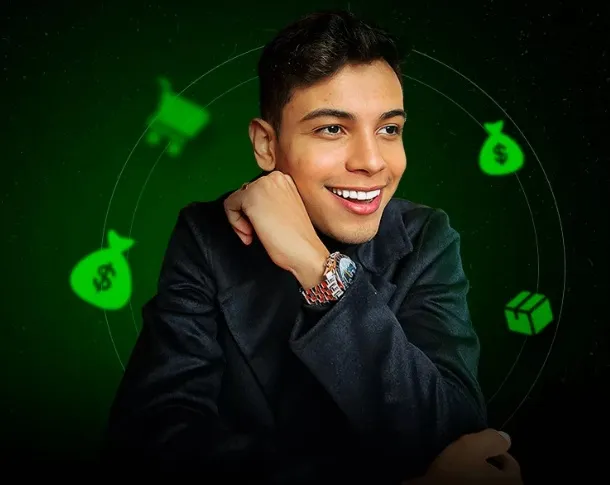

Thiago Hora
Empreendedor, fundador da Frontservice Solutions, agência de marketing digital que vem fazendo diferença nas empresas e profissionais. Com meu canal no youtube "Hora de Negócios" te mostro na prática, como ter resultados REAIS que ninguém te conta no marketing digital.
Fonte de negócios
Dropshipping: um modelo de negócios em que o lojista não detém o estoque físico dos produtos que vende no e-commerce. No dropshipping, o lojista estabelece parcerias com fornecedores dropshipping, que ficam responsáveis não só pelo estoque.
